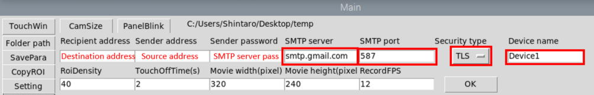

operanthouseのヘッダー
Kitaya lab
Tips
Method of extending vinyl coated wires
Peel off the vinyl coating

Twist the interior lines not to come them apart.

Twist the interior lines together.

Solder the wires.

Cover the metal part with heat-shrinkable tube and heat it to stick.

Copying the SD card
You can save time by copying SD card with completed setup.
1. Get a SD card with minimum space to store the setup completed Raspberry Pi OS's image (I'm using 16 GB one. A smaller data capacity card can be copied more quickly).
2. Perform the setup of Raspberry Pi OS and OperanHouse program.
3. Next, create the image file. Open Notepad and save the blank as "RapsberrypiOsImage.img".

4. Install "Win32 Disk Imager" from the below URL.
https://win32diskimager.org/#download

5. Connect the SD card through USB. Select the .img file you just created as "Image File" and specify the SD card as "Device". Then click the "Read" button.

6. After completion of the reading, remove the SD card and insert the SD card that you want to make a copy to (400GB is used in this example). Then click "Write" button. Copying from 15GB card would take 15 minutes.

7. Insert the destination SD card to the Raspi. The space of the copied card would be recognized as 16GB so next expand it to the maximum. Open the terminal and enter the following command,
$ sudo raspi-config
Then select "Advance Options".

Select "Expand Filesystem". Select "Finish" and reboot it.

8. To check the actual capacity, use the following command,
$ df -h
The space of /dev/root should be around the maximum size of the SD card if succeeded. If it doesn't, reboot again.

Setting Up SMTP Server with Gmail
If you wish to keep the content of emails sent from the Operant House private, you will need to prepare your own SMTP server. This instruction was written on Oct. 8, 2025 and the procedure may change in the future.
First, create a new Google account. After logging into this account, open the menu:
Account → Security, and enable 2-Step Verification using your mobile phone number or another method.


Next, open the following URL:
https://support.google.com/accounts/answer/185833?hl=en
If you cannot access this page, search for it using keywords such as “Google account app password.”

Click Create and manage your app passwords. You will be prompted to enter an App name. Enter any name you like, then click Create. An App password will be displayed. This password is the SMTP password you will enter in the OperantHouse software, so make sure to record it.

Enter the Gmail address of the newly created account in the Sender address field and the recorded password in the SMTP password field.

Reference: Explanation of Each Parameter
- SMTP server: The SMTP server name (for Gmail, use smtp.gmail.com).
- SMTP port: The port number to use (for Gmail, use 587).
- Security type: The encryption method used (for Gmail, use TLS).
- Device name: The name of the device, which will appear in the email as the device identifier.
Method to set up an SMTP server in Gmail
Google account allows you to use a mail server (SMTP server) to send emails by generating a separate password for the server as shown in the following site.
https://rabiloo.com/ja/blog/gmail-smtp
After generating a password, enter information in Setting2.

How to perform multiple sessions during the day
If you enter multiple task start times, it will run multiple sessions in a day.

How to change the density of detection points in the nosepoke detection ROI
Increasing of the value of RoiDensity in Setting decreases the density of detection points.

Initializing saved data
If you want to initialize the saved data, just delete the file save folder. Task parameters are saved in folders named "ParametersForTask*". Other data is saved in "data" folder. If the program can't find them when it loads, it generates them with default values. If you want to copy the saved data to another device, just copy those files.
(Clearing of the saved data sometime fixes program glitch)

Copying Panel Positions and ROIs between tasks
If there are multiple tasks which panel numbers and positions are identical, you can copy their panel and ROI parameters with "CopyRoI" function. Enter task # of copy from and copy to (multiple destination can be set) then click "ok" button.

Useful functions for adjusting ROI sensitivity
If you want to blink panels to check for false detection of ROIs, use "PanelBlink" button which displays blinking panels.

If you want to move the OperantHouse more easily
Make a tray like this.

Internalization of adapter
If your adaptor has a mainbody at the middle of the cable, you can put it into the space behind the monitor.

Camera detection can't distinguish which hole is being nose-poked if mask holes are vertical and adjacent each other.
Confine nosepoke area to the bottom of holes by covering with clear acrylic or PVC plate.
How to change the servo speed of the water arm?
You can adjust the speed of the servo by changing the number in the red square in the arduino program （SerialConnectionWithPython**.ino）. The number must be an integer greater than or equal to 1. Larger number slow down the servo speed.

Light from the upper cue LED affect touch detection
Place the cue LED cover